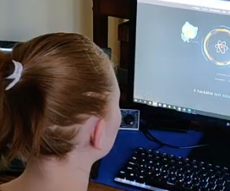
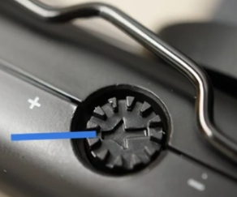

Projects

Video: Writing first HTML page

Video: Tour of MU Campus

Video: HTML training project

Video: Creating a website account

Video: Adding an admin to Facebook page

Video: Making videos with iPads
Experience
Educational Technologist, William Woods University
Reflection
In my position at WWU, I administer the Brightspace e-learning platform: I assist students, create course masters, assist faculty in course design, create assignments, designing end-of-semester surveys and reports, and work with publishers to obtain copies of textbooks for instructors.
Major Accomplishments
I initiated the IT documentation project and designed wiki pages for the documentation of student and instructor help, and internal IT training topics.
Web developer, e-learning administrator, content management specialist, MU Extension, University of Missouri, http://extension.missouri.edu, November 2014- August 2020
Reflection
I designed from-scratch HTML and CSS website layouts and worked a graphic designer to incorporate their designs. I also developed JavaScript web content and .NET web apps. I trained staff in web content management, video production, and use of social media. For MU Extension Facebook accounts, I set up shared pages and scheduled their posts.
create assignments, designing end-of-semester surveys and reports, and work with publishers to obtain copies of textbooks for instructors.Major Accomplishments
Our website experienced a major conversion to a content management system in 2016. I learned the new system and trained staff all over the state of Missouri in the use of the new platform. Also, during the pandemic shutdown, I created a training department and initiative to train nearly 200 support staff throughout the state in various work-from-home tasks such as hosting and participating in Zoom sessions, use of Microsoft Excel to keep office books, graphic design for office managers and video production training for field agents.